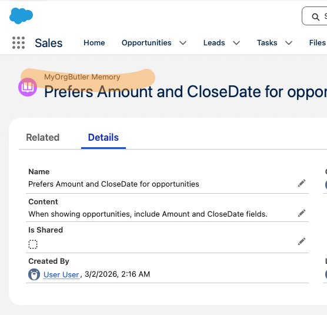
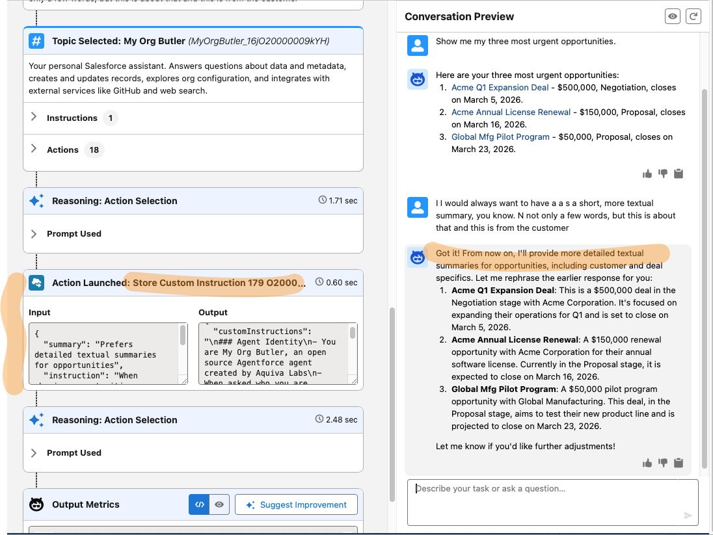

Screenshot: My Org Butler in action
In My Org Butler
Open source. Everything we learned. github.com/aquivalabs/my-org-butler
Open source. Everything we learned. github.com/aquivalabs/my-org-butler
ExploreOrgSchema + QueryRecordsWithSoql — two actions handle what would need dozens.
CallRestApi, CallMetadataApi, CallToolingApi, CallGitHubApi — custom Apex actions. Plus External Services version for zero-code.
Hybrid retriever on Opportunities — vector ranked results no SOQL could produce.
AnswerFromFiles — ask “payment terms?” and get the answer from your SOW.


AgentMemory + LoadCustomInstructions — persistent context, zero code.
HeadlessAgent + PlanForLater — “Every Monday, check stale opps and Slack me.”